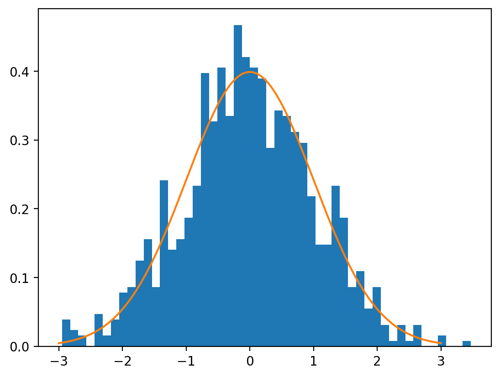

import numpy as np import matplotlib.pyplot as plt %config InlineBackend.figure_format = 'retina'
import torch import torch.distributions as dist import numpy as np import matplotlib.pyplot as plt %matplotlib inline %config InlineBackend.figure_format = 'retina'
import pandas as pd import numpy as np num_rows = 10 department = np.random.choice(['HR', 'IT', 'Finance','Sales'], num_rows) department
array(['Sales', 'IT', 'HR'…
import torch import numpy as np import matplotlib.pyplot as plt import pandas as pd import seaborn as sns %config InlineBackend.figure_format = 'retina'
import ipywidgets print(ipywidgets.__version__)
8.1.5
import matplotlib.pyplot as plt import numpy as np print(np.__version__) import torch import torch.nn as nn import pandas as pd # Retina mode %matplotlib inline %config…

import matplotlib.pyplot as plt import numpy as np import torch import torch.nn as nn import pandas as pd # Retina mode %matplotlib inline %config…
import matplotlib.pyplot as plt import numpy as np import torch import pandas as pd # Retina mode %matplotlib inline %config InlineBackend.figure_format = 'retina'